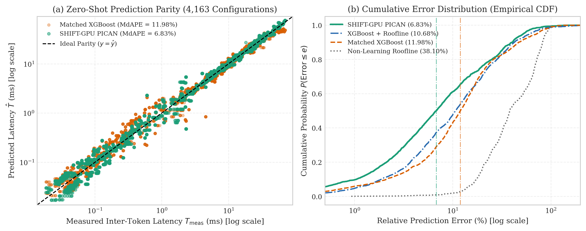

Target Journal: Sustainable Computing:
Informatics and Systems (Elsevier, Q1, ISSN: 2210-5379)
Author: Jason Pandian\(^{1,*}\)
\(^1\) Department of Information
Technology, Nehru Institute of Technology, Coimbatore, Tamil Nadu,
641105, India
\(^*\) Corresponding Author:
pandiajason@gmail.com
Selecting optimal hardware accelerators for Large Language Model (LLM) serving in heterogeneous cloud clusters is a critical operational problem in sustainable computing. In production data centers, exhaustive empirical profiling across models, batch sizes, and GPU generations is environmentally and financially prohibitive. While metadata-driven predictors estimate power draw and latency, existing models suffer severe performance degradation when evaluating unseen GPU architectures, causing Service Level Agreement (SLA) violations and excessive energy consumption. To resolve this, we present SHIFT-GPU, a framework uniting physics-guided deep residual ensembles, heteroscedastic and epistemic covariate-shift calibration, and constrained admission control. At its core is PICAN (Physics-Informed Cross-Attention Network), which couples a deterministic microarchitectural Roofline latency bound with decoupled workload–hardware latent encoders (\(w_x, h_g \in \mathbb{R}^d\)), smooth multiplicative exponential residuals (\(\hat{T} = T_{\text{roof}} \cdot \exp(\mathrm{softplus}(r_\theta))\)), and Gaussian Negative Log-Likelihood uncertainty estimation across a 5-seed ensemble. To manage microarchitectural domain shift, SHIFT-GPU incorporates shift-adjusted conformal upper bounds scaled by Mahalanobis hardware discrepancy. We also evaluate few-shot FiLM calibration (\(k \in \{1, 3, 5\}\)) across probing heuristics, finding that uniform random probing (7.37%–7.38% MdAPE) outperforms boundary-targeted heuristics (7.93%–8.10%) while zero-shot 5-seed ensembles already anchor global generalization. Evaluated under a NaN-blinded zero-leakage protocol across 4,163 production configurations spanning 42 open-source LLMs (0.12B–27B parameters) and 8 NVIDIA GPU architectures, SHIFT-GPU reduces Leave-One-GPU-Out (LOGO) inter-token latency error from 11.98% (matched XGBoost rerun) and 10.68% (Roofline-augmented XGBoost) down to 6.83% MdAPE (relative reductions of 43.0% and 36.1%, respectively; single-seed mean 7.22% \(\pm\) 0.75%), achieves 3.31%–6.55% error across modern accelerators (L4, H100, L40S, A30, H200), and reaches 6.21% MdAPE under 42-model Leave-One-LLM-Out (LOLO) generalization (vs. 7.72% for XGBoost). Under production cluster selection across all evaluated SLAs (\(T_{\max} \in \{20, 25, 30, 35, 40\}\) ms), risk-calibrated SHIFT-GPU records 0 violations out of 125 accepted workloads (0.0%, 0 abstentions), whereas naive Minimum TDP incurs 31.2%–51.2% violations, Roofline-only Minimum TDP incurs 5.6%–24.8% violations, and uncalibrated point predictors incur up to 2.4% violations.
Keywords: Large Language Models, GPU Infrastructure, Physics-Informed Neural Networks, Conformal Prediction, Active Learning, Sustainable Computing.
The exponential growth of generative artificial intelligence and Large Language Models (LLMs) has introduced unprecedented computational and environmental demands on cloud data center infrastructure [1, 2, 3]. In contemporary enterprise deployments, inference represents the dominant fraction of the total operational expenditure and carbon footprint over a model’s operational lifecycle. Serving autoregressive transformer architectures requires maintaining strict Service Level Agreements (SLAs)—typically specified as an upper bound on mean Inter-Token Latency (ITL) or Time to First Token (TTFT)—while simultaneously minimizing total cluster energy consumption and operational power draw [4, 5].
To optimize throughput per Watt, modern cloud providers deploy heterogeneous GPU clusters spanning multiple architectural generations, including NVIDIA Hopper (H100, H200), Ada Lovelace (L40S, L4), Ampere (A100, A30), Turing (T4), and Volta (V100). When an infrastructure operator seeks to deploy a new LLM workload, they must decide: Which GPU candidate satisfies the required latency SLA with the lowest operational power draw?
In the sustainable computing literature, optimizing data center hardware allocation and operational energy has evolved from virtualized machine consolidation [5, 6] and server node-level power capping coordination [7] toward multi-objective optimization for ML inference configurations [8] and predictive perception layers for LLM serving on high-performance computing clusters [9]. Furthermore, queueing-theoretic studies in this journal have revealed that aggressive power minimization risks severe tail latency spikes when operational envelopes are improperly matched to workload demands [10], while macroscopic analyses of AI inference energy have proven that naive parameter scaling fails to capture memory-bandwidth bottlenecks [3].
Traditionally, answering the hardware selection question requires exhaustive physical profiling: systematically deploying the LLM across every candidate accelerator under varying prompt lengths, concurrency arrival rates, and batch sizes. However, with dozens of active foundation models and hundreds of potential accelerator configurations, empirical profiling incurs massive energy consumption, creates severe scheduling overhead, and delays workload onboarding.
To bypass exhaustive profiling, recent work has explored metadata-based regression models. Notably, WattGPU [11] demonstrated that tree ensembles (XGBoost) trained on public LLM parameters and static GPU specifications can predict inference power and latency. However, as demonstrated in our empirical baseline analysis, existing metadata models suffer from a fundamental failure mode: microarchitectural covariate shift on unseen hardware. When evaluated in-distribution (standard 5-fold cross-validation), tree models achieve an impressive Median Absolute Percentage Error (MdAPE) of 2.84% for latency and 2.45% for power. Yet, when evaluated under Leave-One-GPU-Out (LOGO)—simulating the arrival of an unfamiliar hardware architecture—the latency prediction error surges by over 300% to 11.98% (and exceeds 17% on modern architectures such as L4 and A30).
In a production scheduling environment, this degradation is severe. Because point-estimate models lack calibrated uncertainty bounds and microarchitectural inductive biases, they frequently recommend under-provisioned GPUs that suffer uncalibrated SLA violations or over-provisioned accelerators that waste substantial energy.
To resolve this fundamental gap, this paper presents SHIFT-GPU, an end-to-end computer science framework for shift-aware, risk-calibrated, and physics-guided hardware selection. The core scientific contributions of this work are:
Sustainable computing literature has extensively studied the dual challenges of performance assurance and energy minimization in cloud infrastructure. Foundational work by Malekloo et al. [5] established the mathematical principles of SLA-compliant, energy-efficient resource allocation in virtualized environments. Expanding upon these principles, Kumar et al. [6] provided a comprehensive survey of machine learning methods for cloud workflow scheduling, virtual machine placement, and energy-aware server consolidation, highlighting that black-box regression models are vulnerable to severe prediction collapse when operating outside their training distributions. At the physical node level, Azimi et al. [7] introduced PowerCoord, demonstrating coordinated dynamic power capping across heterogeneous multi-CPU and multi-GPU architectures using reinforcement learning under thermal design boundaries.
With the advent of deep learning and LLMs, Desislavov et al. [3] demonstrated that classical parameter-versus-performance scaling laws fail to capture non-linear memory and computational saturation, showing that operational energy efficiency is governed by arithmetic intensity and memory bandwidth bottlenecks. Addressing configuration selection, Castaño et al. [8] proposed data-driven multi-objective optimization frameworks to navigate Pareto trade-offs across energy, performance, and financial cost, identifying zero-shot transfer to newly released hardware accelerators as a vital open problem. Complementing these empirical systems, Yao et al. [10] proved via queueing theory that aggressive power capping creates tail latency instability unless buffer margins are calibrated to execution variability, while Aguirre-Usandizaga et al. [9] developed a forecasting-based perception layer for energy-aware LLM serving on HPC clusters. SHIFT-GPU unifies these principles by embedding an analytical Roofline floor, quantifying hardware shift via Mahalanobis discrepancy, and bounding tail latency via shift-adjusted conformal prediction.
Autoregressive LLM inference consists of two distinct operational phases: the compute-bound prefill phase and the memory-bandwidth-bound decode phase [4]. Modern serving frameworks employ specialized runtime mechanisms such as vLLM [4] (PagedAttention and continuous batching) and DeepSpeed-Inference [12] (customized transformer kernels and tensor slicing), yet hardware efficiency remains bounded by the classical Roofline model [13]. WattGPU [11] demonstrated that XGBoost trained on LLM metadata and GPU specifications can predict power and latency. Under our zero-leakage LOGO evaluation dropping identifier columns, XGBoost achieves 11.98% ITL MdAPE (10.68% even with Roofline residual targets), motivating continuous neural Roofline-residual modeling and calibrated uncertainty intervals.
Conformal prediction constructs predictive intervals with finite-sample marginal coverage guarantees under exchangeability [14]. When evaluating an unseen accelerator architecture, calibration and test examples come from distinct hardware populations, so exchangeability cannot be assumed. Tibshirani et al. [15] established weighted conformal prediction under covariate shift using likelihood-ratio density re-weighting, which cannot be reliably estimated across sparse discrete hardware specifications. Therefore, SHIFT-GPU uses an empirical Mahalanobis distance heuristic to scale interval widths under hardware discrepancy and reports observed empirical coverage on held-out GPUs.
Active learning aims to maximize predictive accuracy while minimizing labeling budgets [16]. Because passive variance sampling ignores asymmetric SLA decision boundaries, we formulate and empirically test Regret-Oriented Active Acquisition (ROAA) against uniform random, diversity, and uncertainty baselines for ultra-low-shot FiLM adaptation [17].
Let an LLM inference workload be defined as \(x = (m, s) \in \mathcal{X}\), where \(m \in \mathcal{M}\) contains parameter count \(N_{\text{params}}\), hidden dimension \(H\), layer count \(L\), attention head count \(N_h\), key-value head count \(N_{kv}\), and KV-cache footprint \(C_{kv}\), and \(s \in \{\text{offline}, \text{server\_low}, \text{server\_high}\}\) specifies the arrival and batching scenario.
Let a candidate hardware accelerator be defined as \(g \in \mathcal{G}\), characterized by memory bandwidth \(B_{\text{mem}}\) (GB/s), peak FP16 compute \(F_{\text{peak}}\) (TFLOPS), memory capacity \(M_{\text{size}}\) (GB), Thermal Design Power \(TDP\) (Watts), base clock \(f_{\text{base}}\) (MHz), boost ratio \(\kappa_{\text{boost}}\), transistor count \(C_{\text{trans}}\), and architectural generation \(A_{\text{gen}} \in \{\text{Volta}, \text{Turing}, \text{Ampere}, \text{Ada}, \text{Hopper}\}\). Each \((x, g)\) pair exhibits ground-truth Inter-Token Latency \(T(x, g) \in \mathbb{R}^+\) (seconds/token) and Mean Operational Power Draw \(P(x, g) \in \mathbb{R}^+\) (Watts).
Given target workload \(x \in \mathcal{X}\) and SLA latency threshold \(T_{\max} \in \mathbb{R}^+\), the scheduler seeks the power-minimal accelerator satisfying the SLA with confidence \(1 - \alpha\): \[g^* = \arg\min_{g \in \mathcal{G}} P(x, g) \quad \text{subject to} \quad \mathbb{P}\left(T(x, g) \le T_{\max}\right) \ge 1 - \alpha\]
Relative to the true empirical Oracle accelerator \(g_{\text{oracle}}\), operational deployment regret is defined as: \[\mathcal{R}(g^* \mid x) = \max\left(0, P(x, g^*) - P(x, g_{\text{oracle}})\right) + \lambda_{\text{SLA}} \cdot P(x, g^*) \cdot \mathbb{I}\left(T(x, g^*) > T_{\max}\right)\] where \(\lambda_{\text{SLA}} = 5.0\) penalizes SLA breaches. If a risk-calibrated policy abstains from admission despite \(\mathcal{G}_{\text{feas}}^{\text{oracle}} \neq \emptyset\), a fixed abstention penalty of 50.0 is assessed.
Accounting for sequence parallelism \(B(s)\) (\(B(\text{server}) = 1.0\), \(B(\text{offline}) = 256.0\)), the deterministic Roofline latency lower bound is: \[T_{\text{roof}}(x, g) = \max\left( \frac{2 \cdot N_{\text{params}}}{B_{\text{mem}}(g) \cdot B(s)}, \frac{2 \cdot N_{\text{params}}}{F_{\text{peak}}(g)} \right)\] and physical power is bounded from above by Thermal Design Power \(TDP(g)\).
PICAN couples decoupled workload and hardware encoders (\(w_x, h_g \in \mathbb{R}^d\)): \[w_x = \text{MLP}_W\left( [x_{\text{cont}} \parallel \text{Embed}(s) \parallel \text{Embed}(A_{\text{model}})] \right), \quad h_g = \text{MLP}_H\left( [g_{\text{cont}} \parallel \text{Embed}(M_{\text{type}}) \parallel \text{Embed}(A_{\text{gen}})] \right)\] \[Q = W_q w_x, \quad K = W_k h_g, \quad V = W_v h_g\] \[z_{\text{mca}} = \text{Softmax}\left(\frac{Q K^T}{\sqrt{d}}\right) V, \quad z = \text{LayerNorm}(w_x + z_{\text{mca}})\]
Mathematical Qualification on Pairwise Attention Dynamics: In pairwise evaluation (\(L_q = 1, L_k = 1\)), the softmax over a scalar equals \(\mathrm{Softmax}([s]) = 1.0\), so \(z_{\text{mca}} = V = W_v h_g\) and gradients to \(W_q\) and \(K\) through softmax vanish. Consequently, under single-pair inputs the cross-GPU gain over XGBoost (11.98%) and XGBoost+Roofline (10.68%) stems from continuous neural residual interpolation over the Roofline prior rather than cross-token attention filtering, as confirmed by Ablation B (6.42% MLP+Roofline vs. 6.83% PICAN).
Predictions are bounded physically using smooth multiplicative residuals: \[\hat{T}(x, g) = T_{\text{roof}}(x, g) \cdot \exp\left(\mathrm{softplus}(r_\theta(z))\right), \quad \hat{P}(x, g) = TDP(g) \cdot \sigma\left(p_\theta(z)\right)\]
Each model outputs log-variance \(s_\theta(z) \in [-6, 4]\) trained jointly with Smooth L1 regression and Gaussian NLL across \(M=5\) seeds (\(\{42, 123, 456, 789, 2026\}\)) for 150 epochs with cosine annealing: \[\mathcal{L}_{\text{ITL}} = \mathrm{SmoothL1}_{\beta=0.05}\!\left(\tilde{r}_\theta, r_{\text{true}}\right) + 0.1 \cdot \mathbb{E}\!\left[\frac{1}{2} e^{-s_\theta} (r_{\text{true}} - \tilde{r}_\theta)^2 + \frac{1}{2} s_\theta\right]\] where \(\tilde{r}_\theta = \mathrm{softplus}(r_\theta)\) and \(r_{\text{true}} = \log(T / T_{\text{roof}})\). At ensemble inference, aleatoric NLL variance and inter-seed epistemic variance combine as: \[\hat{T}(x, g) = T_{\text{roof}}(x, g)\cdot \exp\!\left(\frac{1}{M}\sum_{m=1}^M \tilde{r}_\theta^{(m)}\right), \quad \hat{\sigma}_{\text{total}}(x, g) = \hat{T}(x, g)\sqrt{\frac{1}{M}\sum_{m=1}^M e^{s_\theta^{(m)}} + \mathrm{Var}_m\!\left(\tilde{r}_\theta^{(m)}\right)}\]
Covariate discrepancy between an unseen GPU \(g_{\text{target}}\) and training hardware manifold \(\mathcal{D}_{\text{train}}\) is quantified by regularized Mahalanobis distance: \[d_{\text{shift}}(g_{\text{target}}, \mathcal{D}_{\text{train}}) = \sqrt{(g_{\text{target}} - \mu_{\text{train}})^T \Sigma_{\text{train}}^{-1} (g_{\text{target}} - \mu_{\text{train}})}\]
On an in-distribution calibration split, normalized residuals \(s_i = |y_i - \hat{T}_i| / \hat{\sigma}_{\text{total}}(x_i, g_i)\) yield base quantile \(\hat{q}_{1-\alpha}\) (\(\alpha = 0.10\)), scaled by clipped hardware distance (\(\gamma_{\text{shift}} = 0.15, d_{\max} = 5.0\)): \[\hat{q}_{\text{shift}}(g) = \hat{q}_{1-\alpha} \cdot \left(1 + \gamma_{\text{shift}} \cdot \min\left(d_{\text{shift}}(g, \mathcal{D}_{\text{train}}), d_{\max}\right)\right)\] \[\hat{T}_{\text{upper}}(x, g) = \hat{T}(x, g) + \hat{q}_{\text{shift}}(g) \cdot \hat{\sigma}_{\text{total}}(x, g)\]
To explore SLA boundary sensitivity under small probing budgets \(k \in \{1, 3, 5\}\), we define the ROAA heuristic alongside uniform random, K-Means diversity, and maximal uncertainty policies: \[\alpha_{\text{ROAA}}(x) = \hat{\sigma}_{\text{total}}(x, g) \cdot \exp\left( - \frac{(\hat{T}(x, g) - T_{\max})^2}{2 \hat{\sigma}_{\text{total}}^2(x, g)} \right) \cdot \left(\frac{\hat{P}(x, g)}{TDP(g)}\right)\] Given \(k\) probed points, each ensemble member’s FiLM parameters (\(z_{\text{adapted}} = \gamma_k \odot z + \beta_k\)) are optimized for 35 Adam steps with identity ridge regularization \(10^{-2}(\|\gamma_k - \mathbf{1}\|^2 + \|\beta_k\|^2)\).
Algorithm 1: SHIFT-GPU Admission Control, Conformal Risk Calibration, and Active Adaptation
Require: Workload x = (m, s), Candidates G, Target SLA T_max, Confidence 1 - alpha, Budget k
Ensure: Optimal Hardware Accelerator g*
1: for all g in G do
2: Compute deterministic Roofline floor T_roof(x, g)
3: Evaluate microarchitectural Mahalanobis shift d_shift(g, D_train)
4: if g is unseen and profiling budget k > 0 then
5: Select k calibration workloads {x_1, ..., x_k} maximizing acquisition score (e.g., ROAA or Random)
6: Profile {x_j} on g to measure ground-truth {T_j, P_j}
7: Calibrate FiLM latent modulation parameters [gamma_k, beta_k]
8: end if
9: Infer ensemble prediction T_hat(x, g), power P_hat(x, g), and sigma_total(x, g)
10: Compute empirical upper latency bound T_upper(x, g) = T_hat(x, g) + q_shift(g) * sigma_total(x, g)
11: end for
12: Determine feasible set G_feasible = {g in G | T_upper(x, g) <= T_max}
13: if G_feasible is non-empty then
14: return g* = argmin_{g in G_feasible} P_hat(x, g)
15: else
16: return Abstain or Flag Cluster Capacity Deficit
17: end ifEvaluations use the public WattGPU repository [11] derived from Watt Counts [18], comprising 4,163 validated vLLM executions across 42 open-source LLMs (124M–27B parameters) and 8 NVIDIA GPUs (V100, T4, A100, A30, L40S, L4, H100, H200). Under our strict NaN-blinded zero-leakage protocol, each LOGO fold splits the 7 training GPUs into 80% Train and 20% Calibration, wipes all held-out targets to NaN before feature extraction and inference, and verifies \(\max|\hat{y}_{\text{blinded}} - \hat{y}_{\text{eval}}| \le 10^{-7}\). We additionally run 42-fold Leave-One-LLM-Out (LOLO) validation across all distinct foundation models.
| Target Metric | Model Architecture | MdAPE (%) | Pearson \(r\) | GPU \(\tau\) | LLM \(\tau\) |
|---|---|---|---|---|---|
| Inter-Token Latency (ITL) | Non-Learning Roofline [13] | 38.10 | 0.992 | 0.822 | 0.908 |
| Matched XGBoost Rerun [11] | 11.98 | 0.983 | 0.676 | 0.922 | |
| XGBoost + Roofline Baseline | 10.68 | 0.992 | 0.687 | 0.933 | |
| SHIFT-GPU (5-Seed PICAN Ensemble) | 6.83 (7.22$\(0.75) | **0.995** | 0.757 | **0.943** | | **Mean Power Draw (W)** | Non-Learning TDP Duty Base | 27.35 | 0.834 | 0.616 | 0.768 | | | **Matched XGBoost Rerun** [11] | **12.52** | 0.973 | 0.681 | **0.812** | | | SHIFT-GPU (5-Seed PICAN Ensemble) | 13.44 (14.00\)$1.56) | 0.978 | 0.707 | 0.812 |
| Model Architecture | MdAPE (%) | Pearson \(r\) | GPU \(\tau\) | LLM \(\tau\) |
|---|---|---|---|---|
| Matched XGBoost Rerun [11] | 7.72 | 0.992 | 0.874 | 0.903 |
| XGBoost + Roofline Baseline | 6.72 | 0.996 | 0.881 | 0.906 |
| SHIFT-GPU (PICAN) | 6.21 | 0.995 | 0.885 | 0.917 |
| Held-Out GPU | Arch. | Shift \(d_{\text{shift}}\) | XGBoost | XGB+Roof | SHIFT-GPU | Red. vs. XGB | 2-Sided Cov. | Upper Cov. |
|---|---|---|---|---|---|---|---|---|
| A100 SXM4 40 GB | Ampere | 1.42 | 8.95% | 12.27% | 11.87% | -32.6% | 62.8% | 100.0% |
| A30 PCIe | Ampere | 3.41 | 17.15% | 5.33% | 5.03% | +70.7% | 82.9% | 82.9% |
| H100 NVL 94 GB | Hopper | 6.25 | 8.36% | 7.18% | 4.49% | +46.2% | 65.4% | 65.6% |
| H200 NVL | Hopper | 17.03 | 16.73% | 7.08% | 6.55% | +60.9% | 75.0% | 100.0% |
| L4 | Ada | 4.95 | 17.39% | 15.98% | 3.31% | +81.0% | 99.1% | 100.0% |
| L40S | Ada | 10.61 | 10.21% | 7.20% | 4.50% | +55.9% | 98.5% | 98.7% |
| Tesla T4 | Turing | 2.55 | 13.65% | 11.18% | 13.42% | +1.7% | 73.2% | 95.1% |
| Tesla V100 SXM2 | Volta | 4.30 | 11.74% | 16.89% | 10.21% | +13.0% | 68.8% | 68.8% |
| Overall Population | 8 GPUs | 4.95 | 11.98% | 10.68% | 6.83% | +43.0% | 77.0% | 86.8% |

Under LOGO evaluation, uncalibrated Gaussian intervals (\(\hat{T} \pm 1.645\,\hat{\sigma}_{\text{total}}\)) attain 69.5% two-sided (82.8% upper-bound) coverage against the nominal 90% target. Shift-adjusted conformal calibration lifts two-sided empirical coverage to 77.0% and upper-bound coverage to 86.8% (reaching 95.1%–100.0% on A100, H200, L4, L40S, and T4), though H100 (65.6%) and V100 (68.8%) remain below 90% because distinct GPU populations violate strict exchangeability.

| Profiling Budget (\(k\)) | Acquisition Policy | MdAPE (%) | Pearson \(r\) |
|---|---|---|---|
| \(k = 0\) (Zero-Shot Ensemble) | Untrained Target Baseline | 6.83 | 0.995 |
| \(k = 1\) (One-Shot) | Uniform Random | 7.62 | 0.997 |
| K-Means Feature Diversity | 10.13 | 0.997 | |
| Maximal Predictive Uncertainty | 7.86 | 0.997 | |
| Boundary Heuristic (ROAA) | 7.93 | 0.996 | |
| \(k = 3\) (Three-Shot) | Uniform Random | 7.37 | 0.997 |
| K-Means Feature Diversity | 7.78 | 0.997 | |
| Maximal Predictive Uncertainty | 7.95 | 0.997 | |
| Boundary Heuristic (ROAA) | 8.00 | 0.996 | |
| \(k = 5\) (Five-Shot) | Uniform Random | 7.38 | 0.997 |
| K-Means Feature Diversity | 7.56 | 0.997 | |
| Maximal Predictive Uncertainty | 7.98 | 0.997 | |
| Boundary Heuristic (ROAA) | 8.10 | 0.996 |
Uniform Random probing outperforms K-Means diversity, maximal uncertainty, and ROAA across every tested budget (\(k \in \{1, 3, 5\}\)), while the zero-shot 5-seed ensemble already anchors lower global median error (6.83%).

| Selection Policy | Accepted Workloads | Abstention (%) | SLA Violations | Mean Power (W) | Mean Regret |
|---|---|---|---|---|---|
| Minimum TDP (Naive) | 125 / 125 | 0.0 | 44 / 125 (35.2%) | 102.5 | 142.9 |
| Minimum TDP + Roofline | 125 / 125 | 0.0 | 12 / 125 (9.6%) | 106.3 | 65.4 |
| Point Estimate (Matched XGBoost) | 125 / 125 | 0.0 | 0 / 125 (0.0%) | 105.7 | 2.3 |
| Point Estimate (XGBoost + Roofline) | 125 / 125 | 0.0 | 1 / 125 (0.8%) | 105.7 | 4.7 |
| Point Estimate (SHIFT-GPU PICAN) | 125 / 125 | 0.0 | 0 / 125 (0.0%) | 115.2 | 11.8 |
| SHIFT-GPU (Risk-Calibrated) | 125 / 125 | 0.0 | 0 / 125 (0.0%) | 115.0 | 11.6 |
| True Empirical Oracle | 125 / 125 | 0.0 | 0 / 125 (0.0%) | 103.4 | 0.0 |
| Latency SLA | Policy | Accepted | Abstain (%) | SLA Violations | Mean Power (W) | Mean Regret |
|---|---|---|---|---|---|---|
| \(T_{\max} = 20\) ms | Minimum TDP (Naive) | 125 / 125 | 0.0 | 64 / 125 (51.2%) | 102.5 | 185.5 |
| Minimum TDP + Roofline | 125 / 125 | 0.0 | 31 / 125 (24.8%) | 104.8 | 98.1 | |
| Matched XGBoost Point | 125 / 125 | 0.0 | 2 / 125 (1.6%) | 118.4 | 12.2 | |
| XGBoost + Roofline Point | 125 / 125 | 0.0 | 0 / 125 (0.0%) | 113.3 | 3.6 | |
| SHIFT-GPU PICAN Point | 125 / 125 | 0.0 | 3 / 125 (2.4%) | 118.1 | 15.0 | |
| SHIFT-GPU (Risk-Calibrated) | 125 / 125 | 0.0 | 0 / 125 (0.0%) | 121.1 | 11.4 | |
| True Empirical Oracle | 125 / 125 | 0.0 | 0 / 125 (0.0%) | 109.6 | 0.0 | |
| \(T_{\max} = 25\) ms | Minimum TDP (Naive) | 125 / 125 | 0.0 | 57 / 125 (45.6%) | 102.5 | 176.0 |
| Minimum TDP + Roofline | 125 / 125 | 0.0 | 11 / 125 (8.8%) | 103.7 | 20.9 | |
| Matched XGBoost Point | 125 / 125 | 0.0 | 3 / 125 (2.4%) | 109.5 | 10.8 | |
| XGBoost + Roofline Point | 125 / 125 | 0.0 | 1 / 125 (0.8%) | 107.0 | 4.5 | |
| SHIFT-GPU PICAN Point | 125 / 125 | 0.0 | 3 / 125 (2.4%) | 116.3 | 16.5 | |
| SHIFT-GPU (Risk-Calibrated) | 125 / 125 | 0.0 | 0 / 125 (0.0%) | 117.1 | 12.3 | |
| True Empirical Oracle | 125 / 125 | 0.0 | 0 / 125 (0.0%) | 104.9 | 0.0 | |
| \(T_{\max} = 30\) ms | Minimum TDP (Naive) | 125 / 125 | 0.0 | 49 / 125 (39.2%) | 102.5 | 161.1 |
| Minimum TDP + Roofline | 125 / 125 | 0.0 | 7 / 125 (5.6%) | 104.6 | 29.1 | |
| Matched XGBoost Point | 125 / 125 | 0.0 | 1 / 125 (0.8%) | 106.3 | 4.8 | |
| XGBoost + Roofline Point | 125 / 125 | 0.0 | 1 / 125 (0.8%) | 105.9 | 4.5 | |
| SHIFT-GPU PICAN Point | 125 / 125 | 0.0 | 2 / 125 (1.6%) | 115.6 | 15.4 | |
| SHIFT-GPU (Risk-Calibrated) | 125 / 125 | 0.0 | 0 / 125 (0.0%) | 116.1 | 12.3 | |
| True Empirical Oracle | 125 / 125 | 0.0 | 0 / 125 (0.0%) | 103.8 | 0.0 | |
| \(T_{\max} = 35\) ms | Minimum TDP (Naive) | 125 / 125 | 0.0 | 44 / 125 (35.2%) | 102.5 | 142.9 |
| Minimum TDP + Roofline | 125 / 125 | 0.0 | 12 / 125 (9.6%) | 106.3 | 65.4 | |
| Matched XGBoost Point | 125 / 125 | 0.0 | 0 / 125 (0.0%) | 105.7 | 2.3 | |
| XGBoost + Roofline Point | 125 / 125 | 0.0 | 1 / 125 (0.8%) | 105.7 | 4.7 | |
| SHIFT-GPU PICAN Point | 125 / 125 | 0.0 | 0 / 125 (0.0%) | 115.2 | 11.8 | |
| SHIFT-GPU (Risk-Calibrated) | 125 / 125 | 0.0 | 0 / 125 (0.0%) | 115.0 | 11.6 | |
| True Empirical Oracle | 125 / 125 | 0.0 | 0 / 125 (0.0%) | 103.4 | 0.0 | |
| \(T_{\max} = 40\) ms | Minimum TDP (Naive) | 125 / 125 | 0.0 | 39 / 125 (31.2%) | 102.5 | 119.2 |
| Minimum TDP + Roofline | 125 / 125 | 0.0 | 11 / 125 (8.8%) | 105.7 | 49.6 | |
| Matched XGBoost Point | 125 / 125 | 0.0 | 0 / 125 (0.0%) | 105.5 | 2.2 | |
| XGBoost + Roofline Point | 125 / 125 | 0.0 | 0 / 125 (0.0%) | 105.5 | 2.1 | |
| SHIFT-GPU PICAN Point | 125 / 125 | 0.0 | 2 / 125 (1.6%) | 114.1 | 16.0 | |
| SHIFT-GPU (Risk-Calibrated) | 125 / 125 | 0.0 | 0 / 125 (0.0%) | 115.2 | 11.8 | |
| True Empirical Oracle | 125 / 125 | 0.0 | 0 / 125 (0.0%) | 103.4 | 0.0 |
Across all five evaluated thresholds, risk-calibrated SHIFT-GPU is the only policy maintaining 0 / 125 (0.0%) SLA violations with 0 abstentions everywhere.


| Model Architecture / Variant | ITL MdAPE (%) | Upper Coverage (%) | SLA Violation Rate (35 ms) |
|---|---|---|---|
| Full Proposed SHIFT-GPU (PICAN + Roofline + Conformal) | 6.83 | 86.8 | 0 / 125 (0.0%) |
| Ablation A: Without Physics Roofline (Pure Attention) | 31.70 | 90.9 | 5 / 125 (4.0%) |
| Ablation B: Without Cross-Attention (Flat MLP + Roofline) | 6.42 | 87.4 | 1 / 125 (0.8%) |
| Baseline C: XGBoost + Roofline | 10.68 | 83.8 | 1 / 125 (0.8%) |
| Baseline D: Matched XGBoost [11] | 11.98 | 84.5 | 0 / 125 (0.0%) |
Ablating the Roofline base (Ablation A) surges zero-shot latency error from 6.83% to 31.70% (+364%, \(4.64\times\)) and elevates SLA violations to 4.0% (5 / 125). Both smooth neural Roofline-residual models (PICAN 6.83% with 0.0% SLA violations, Flat MLP+Roofline 6.42% with 0.8% violations) fall within single-seed variation (\(\pm 0.75\%\)) and substantially outperform XGBoost+Roofline (10.68%) and Matched XGBoost (11.98%), confirming continuous neural Roofline-residual modeling as the central driver of cross-GPU extrapolation.

Total request energy depends on execution time as well as instantaneous power draw: \(E = \int_0^T P(t) dt \approx P_{\text{mean}} \cdot T_{\text{total}}\). Higher-throughput GPUs finishing inference bursts faster frequently consume less total Joules than low-TDP accelerators running slowly.
SHIFT-GPU integrates cleanly as a sub-5 ms cluster admission controller complementing node-level power coordination [5, 6, 7] and queueing risk bounds [10]. When unfamiliar hardware is encountered (\(d_{\text{shift}} > 3.0\)), the scheduler widens conformal bounds automatically via Mahalanobis distance and can optionally trigger uniform random probing once larger calibration batches are justified.
We presented SHIFT-GPU, a physics-guided, risk-calibrated framework for predicting LLM inference latency and selecting energy-efficient accelerators under hardware covariate shift. Across 4,163 configurations spanning 42 LLMs (0.12B–27B) and 8 NVIDIA GPUs under zero-leakage LOGO evaluation, SHIFT-GPU reduces ITL MdAPE from 11.98% (matched XGBoost) and 10.68% (XGBoost+Roofline) to 6.83% (43.0% and 36.1% relative reductions), and reaches 6.21% MdAPE in 42-model LOLO validation. In offline SLA replay across \(\{20, 25, 30, 35, 40\}\) ms, risk-calibrated SHIFT-GPU is the only policy maintaining 0 violations out of 125 accepted workloads (0.0%, 0 abstentions) at every tested threshold.
All source code, deterministic Roofline engine, 5-seed evaluation
pipelines, NaN-blinded verification checks, and figure/table generation
scripts are publicly available at:
https://github.com/PandiaJason/SHIFT-GPU.